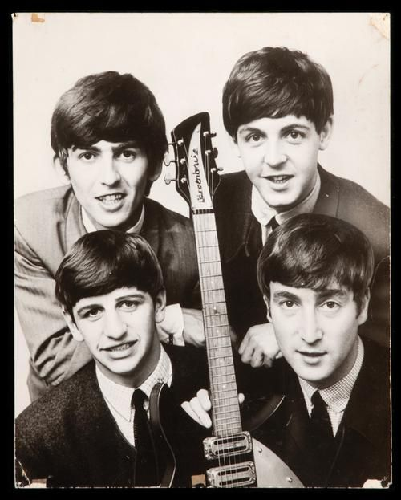

TThe Beatles, formada en Liverpool en 1960 por John Lennon, Paul McCartney, George Harrison y Ringo Starr, se convirtió en una de las bandas más influyentes y queridas de todos los tiempos. Tras tocar en clubes de Liverpool y Hamburgo, ganaron popularidad en el Reino Unido con éxitos como "Please Please Me" y "She Loves You" en 1963, dando inicio a la "Beatlemanía". En 1964, conquistaron Estados Unidos y, con su aparición en el The Ed Sullivan Show, se consolidaron como un fenómeno global.

A mediados de los 60, The Beatles comenzaron a experimentar musicalmente. Álbumes como Rubber Soul y Revolver introdujeron nuevas técnicas y géneros, y con Sgt. Pepper’s Lonely Hearts Club Band (1967), desafiaron las normas de la época, explorando conceptos y sonidos innovadores. Este periodo marcó su evolución de banda de pop a artistas vanguardistas y redefinió la música moderna.
A pesar del éxito, las tensiones aumentaron hacia finales de los 60. Durante la grabación del Álbum Blanco en 1968, las diferencias creativas y personales se hicieron evidentes. Sin embargo, lograron lanzar Abbey Road (1969), considerado uno de sus mejores álbumes. Su último trabajo fue Let It Be, en 1970, cuando se disolvieron oficialmente.
El legado de The Beatles sigue vivo hasta hoy, habiendo transformado la música y la cultura popular con su creatividad y visión artística.
Please Please Me es el álbum debut de la banda británica de rock The Beatles, lanzado el 22 de marzo de 1963 en el Reino Unido. Su publicación acompaña el inicio de la Beatlemanía, después del éxito de los sencillos «Please Please Me» (n.º 1 en varias listas musicales inglesas, pero solo n.º 2 en el Record Retailer) y «Love Me Do» (n.º 17 en el Record Retailer).
With the Beatles es el segundo álbum de estudio de la banda británica de rock, The Beatles, empezado a grabar apenas cuatro meses después de haberse publicado Please Please Me, y editado el 22 de noviembre de 1963 en mono (PMC 1206) y en estéreo (PCS 3045) en el sello discográfico Parlophone. Presentaba ocho composiciones originales —incluyendo la primera de George Harrison— y seis versiones, la mayoría de la Motown y el R&B.
A Hard Day's Night es el tercer álbum de estudio de la banda británica de rock, The Beatles, publicado el 10 de julio de 1964 por la compañía discográfica Parlophone, con el número de catálogo PMC 1230 (mono) y PCS 3058 (estéreo).
Alcanzó la posición uno y desbancó al anterior LP del grupo, With the Beatles, y permaneciendo en ese puesto durante veintiún semanas de las treinta y ocho que se mantuvo en lista.
Beatles for Sale es el cuarto álbum de estudio de la banda británica de rock The Beatles, publicado el 4 de diciembre de 1964 por la compañía discográfica Parlophone, con el número de catálogo PMC 1240 (mono) y PCS 3062 (estéreo).
Con un pedido de más de 700 000 discos antes de su publicación, se clasificó enseguida en el número uno de la lista británica, y desbancó de la misma a su álbum predecesor, A Hard Day's Night.
Help! es el quinto álbum de estudio de la banda británica de rock, The Beatles, al mismo tiempo que banda sonora de su película de mismo título. Producido por George Martin para el sello discográfico subsidiario de EMI, Parlophone, el disco presentaba catorce canciones en su forma británica original, de las cuales siete aparecieron en la película Help!. Estas siete canciones ocuparon el primer lado del álbum de vinilo. El segundo lado contuvo otras siete canciones que incluía el tema más versionado jamás escrito, «Yesterday».
Rubber Soul es el sexto álbum de estudio de la banda británica de rock The Beatles, lanzado el 3 de diciembre de 1965. Producido por George Martin, fue grabado en solo cuatro semanas para así poder aprovechar el mercado navideño. A diferencia de sus cinco álbumes anteriores, Rubber Soul fue el primero en ser grabado por sus autores durante un periodo específico concreto, sin ser interrumpido por giras musicales o proyectos fílmicos entre las sesiones de grabación del álbum.
Revolver es el séptimo álbum de estudio de la banda británica de rock The Beatles lanzado el 5 de agosto de 1966 por EMI. Fue el último álbum lanzado antes de que la banda decidiera abandonar los escenarios y las giras, a favor de la experimentación en los estudios de grabación. Ha sido considerado como uno de los álbumes más grandes e innovadores en la historia de la música popular, con reconocimiento centrado en su variedad de estilos musicales, diversos sonidos y contenido lírico.
"Sgt. Pepper's Lonely Hearts Club Band es el octavo álbum de estudio de la banda británica de rock, The Beatles. Publicado el 26 de mayo de 1967,nota es a menudo citado por la crítica como su mejor obra y el disco más importante de todos los tiempos.Continuando con la maduración artística de la banda vista en Revolver (1966), se alejó bastante del pop rock convencional de la época e incorporó elementos poco comunes y muy divergentes entre sí a su música, como música hindú, música psicodélica, music hall, e influencias sinfónicas.
The Beatles, también conocido coloquialmente como White Album, o el Álbum Blanco en el mundo hispano, es el noveno álbum de estudio de la banda británica de rock The Beatles, lanzado el 22 de noviembre de 1968. Publicado como un álbum doble, su sencilla portada blanca carece de imágenes o algún texto que no sea el nombre de la banda en relieve,nota esto ideado como un claro contraste a la vívida portada de su álbum anterior Sgt. Pepper's Lonely Hearts Club Band.
Abbey Road es el undécimo álbum de estudio (duodécimo en estados unidos) publicado por la banda británica de rock The Beatles, sería lanzado el 26 de septiembre de 1969 en Reino Unido por Apple Records. Las grabaciones de Abbey Road comenzarían en abril de 1969, haciendo de este el último álbum grabado por la banda, ya que Let It Be, lanzado en 1970, había sido grabado con anterioridad.